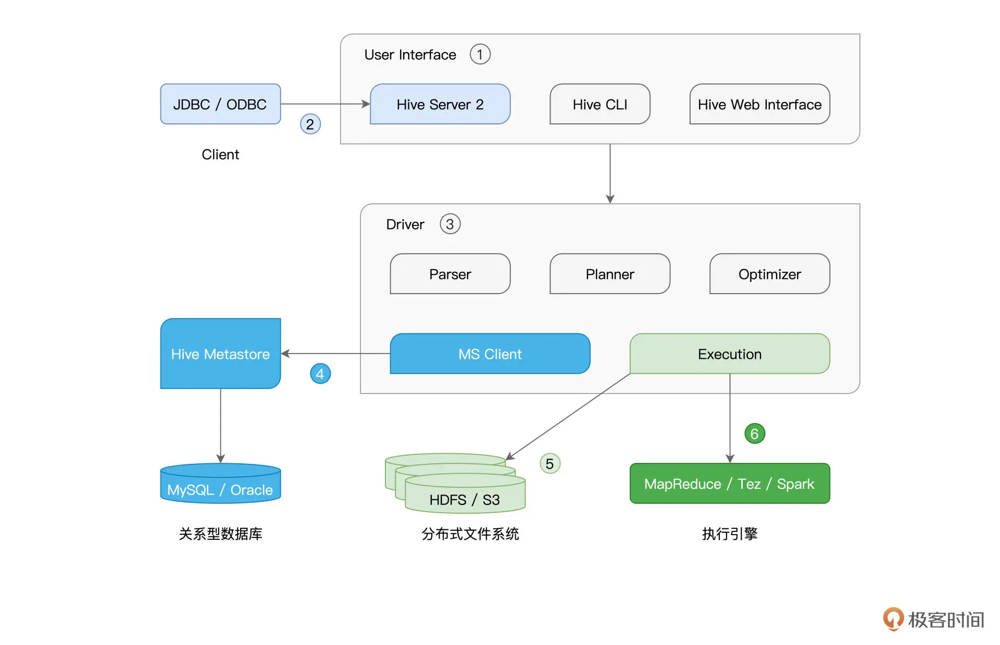
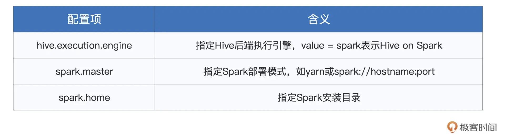

Hive + Spark¶
Note
在 Hive 与 Spark 这对“万金油”组合中，Hive 擅长元数据管理，而 Spark的专长是高效的分布式计算，二者的结合可谓是“强强联合”。
Spark 与 Hive 有两类集成方式，即 Spark with Hive 和 Hive on Spark.
Hive 架构与基本原理¶
Hive 的核心部件是 User Interface 和 Driver，而不论是元数据库、存储系统，还是计算引擎，Hive 都以“外包”、“可插拔”的方式交给第三方独立组件，如下图所示：

Spark with Hive¶
Hive Metastore 利用 RDBMS 来存储数据表的元信息，如表名、表类型、Schema、表数据的存储路径等。
Spark SQL 通过访问 Hive MetaStore 这本“户口簿”，即可扩充数据访问来源，而这就是 Spark with Hive 集成方式的核心思想。
我们有两种简单的途径实现 Spark with Hive 的集成方式：
创建 SparkSession，访问本地或远程的 Hive MetaStore
通过 spark-sql，访问本地或远程的 Hive MetaStore
Spark Session + Hive Metastore¶
我们需要让 Spark 知道 Metastore 的访问地址，要传递这个消息，我们有两种办法：
在创建 Spark Session 的时候，通过 config 函数来明确指定 hive.metastore.uris 参数
让 Spark 读取 Hive 的配置文件 hive-site.xml，把 hive-site.xml 拷贝到 Spark 安装目录下的 conf 子目录即可
from pyspark.sql import SparkSession
# 明确指定 hive.metastore.uris
spark = (SparkSession
.builder
.appName("spark with hive")
.config("hive.metastore.uris", "thrift://hiveHost:9083")
.enableHiveSupport()
.getOrCreate())
# 假设 Hive 有一张名为 salaries 的薪资表，每条数据包含 id 和 salary 两个字段
# 读取 Hive 表，创建 DataFrame
df = spark.sql("select * from salaries")
df.show()
spark-sql + Hive Metastore¶
将配置好 hive.metastore.uris 参数的 hive-site.xml 文件放到 Spark 安装目录的 conf 下之后，我们就可以在 spark-sql 中直接使用 SQL 语句来查询或是处理 Hive 表了。
但是这种方式需要 spark-sql CLI 和 Hive Metastore 安装在同一节点，即只能本地访问 Hive Metastore.
local 模式下运行：
spark-sql
集群上跑：
spark-sql --master mesos
Hive on Spark¶
Hive on Spark 是指 Hive 采用 Spark 作为其后端的分布式执行引擎，这里 Hive 唱主角。
Hive on Spark: Hive Driver + Spark Core
Spark with Hive: Spark SQL + Spark Core
在准备好 Spark 集群后，我们就可以通过修改 hive-site.xml 中相关的配置项，来轻松完成 Hive on Spark 的集成，如下表所示：

在配置好这3个参数后，我们就可以用 Hive SQL 向 Hive 提交查询请求了，计算引擎为 Spark.